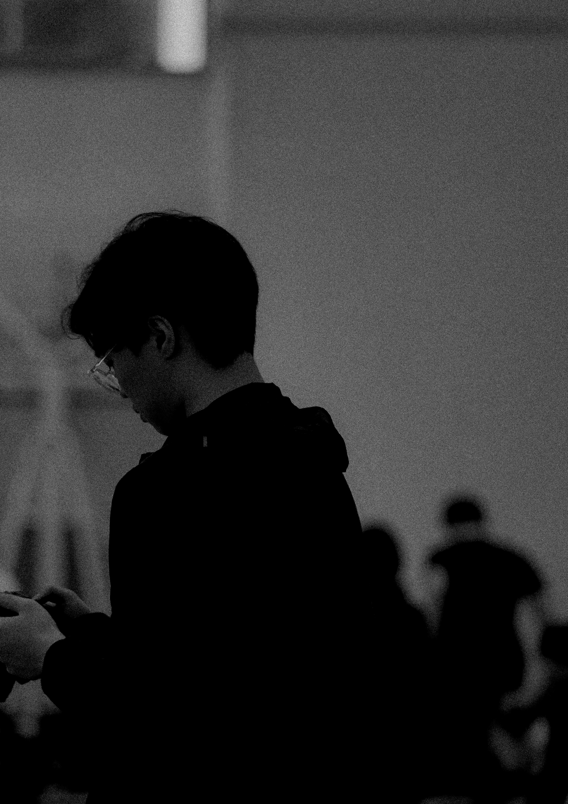

I also loved him for his imperturbability. He believed in general and in principle that the best was to come. A belief hard to sustain during the twentieth century, if one didn't close one's eyes. And he carried with him everywhere three pairs of spectacles - each pair with different lenses. He examined everything. He died in 1972. Was he the most compliant man I've ever met, or the most persistent and independent? Perhaps he was both. He was never where you expected him to be. Whenever I stood beside him - in the figurative or physical sense - I felt reassured. Time will tell, he used to say, and he said this in such a way that I assumed time would tell what we'd both be finally glad to hear.